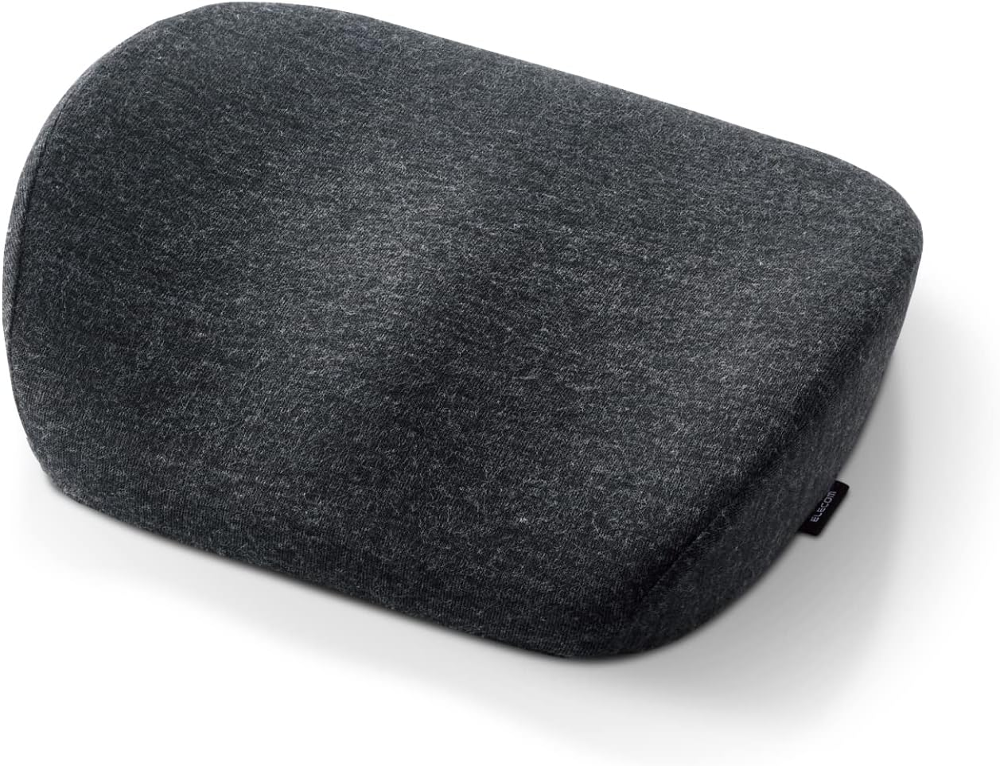
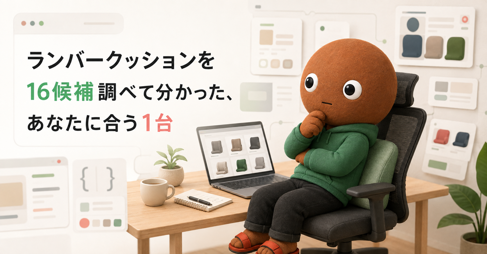
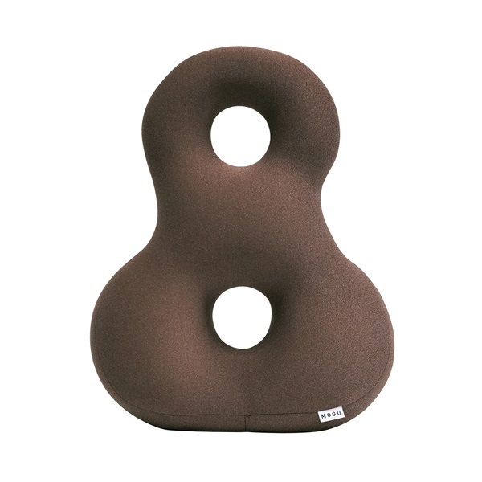
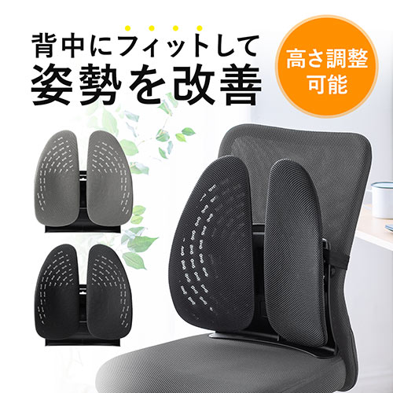
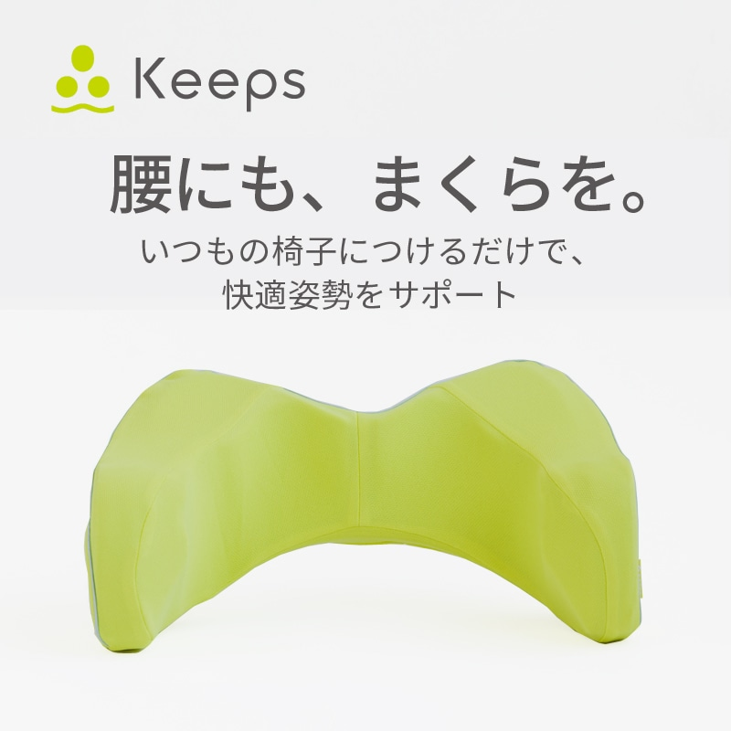
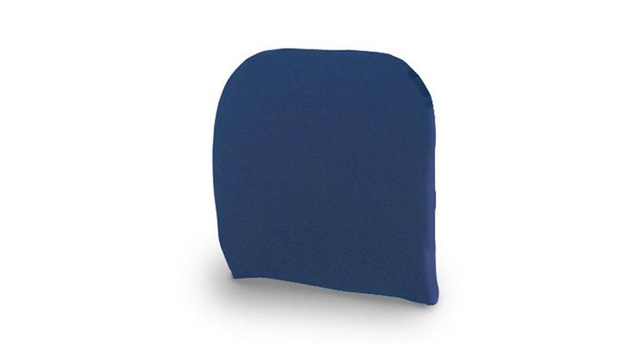
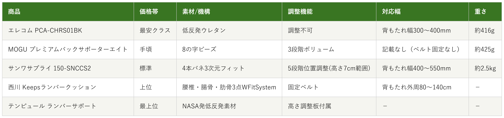

Amazonで見るデスクチェアに長時間座っていると、腰の下あたりがだんだん痛くなってくる人へ
ランバークッション16候補を調査。素材・クッション性と対応する背もたれの幅から、選び方の違う5商品を比較しました。
自分に合うランバークッションを探す
この記事はAmazonアソシエイト・プログラムの参加者として、紹介料を得る場合があります（PR）。仕様は調査時点の情報です。
16候補から、選び方の違う5商品に絞りました。まずは気になる1台へ。向いている人・向いていない人と、低評価レビューもまとめています。
あなたの使い方に合う、1台を。

Amazonで見る
Amazonで見る
Amazonで見る
Amazonで見る
Amazonで見る横にスワイプして、5商品を見比べる
調べてわかったのは、基準はシンプルでした。
1つ目は「素材・クッション性」。低反発ウレタンか、高反発ウレタンか、パウダービーズかで、硬さと体圧分散の仕方が変わります。
2つ目は「対応する背もたれの幅・固定方法」。ベルト式で固定するタイプがほとんどですが、対応する背もたれ幅の範囲に自分の椅子が収まるかで、使えるかどうかが変わります。
価格帯には、かなり幅がありました。

価格帯・素材/機構・調整機能・対応幅・重さの比較（価格帯は最安クラス〜最上位の5段階）
選ぶ決め手とにかく安さを重視するなら、この1台です。
参考：Amazonレビューを基にした集約
エレコムのランバーサポート
（低反発タイプ）PCA-CHRS01BKは、
価格を抑えたい人に最も向く1台です。
低反発ウレタンが腰を支え体圧を分散し、
背骨を自然なS字型に保つ設計です。
ゴムバンドで椅子の背もたれに固定します。
サイズは幅360×奥行100×高さ310mm、
重さは約416gです。
5商品で断トツに手を出しやすい価格帯です。
選ぶ決め手フィット感を重視するなら、この1台です。
参考：レビューまとめサイトを基にした集約
MOGUのプレミアムバック
サポーターエイトは、
背もたれ全体に柔らかく密着させたい人に最も向く1台です。
8の字型のビーズクッションで
背中・腰・お尻にやさしくフィットします。
2つのリングが3段階のボリュームを作ります。
サイズは約45×35×12cm、
重さは約425gです。
座り直しても位置がずれにくいと感じやすい設計です。
選ぶ決め手高さ調整を重視するなら、この1台です。
サンワサプライの
後付けランバーサポート
150-SNCCS2は、
自分の腰の位置に合わせて
微調整したい人に
最も向く1台です。
4本のバネが3次元的に動いて
背中の形状にフィットし、
5段階で位置調整ができます。
対応する背もたれ幅は400〜550mmで、
メッシュカバーは外して
丸洗いできます。
選ぶ決め手骨盤ホールドを重視するなら、この1台です。
参考：西川公式レビュー
西川のKeepsランバークッションは、
骨盤ごとしっかり固定して
姿勢を保ちたい人に最も向く1台です。
独自の「W Fit System」により、
腰椎ポイントが腰を適度に押し、
腸骨ポイントがサイドを締めてホールドします。
サイズは幅51×奥行31×高さ21cm、
固定ベルトは
背もたれ外周80〜140cmに対応します。
選ぶ決め手上質素材を重視するなら、この1台です。
参考：関連レビューを基にした集約
テンピュールのランバーサポート
83300289は、
素材の質を最優先したい人に最も向く1台です。
NASA発の低反発素材で、
理想的な背骨のカーブを
描けるよう設計されています。
高さ調整板が付属していて、
好みの高さに調節できます。
サイズは約幅36×奥行36×厚さ7cmです。
3年保証が付いているので、
素材がすぐへたらないか心配な人でも
安心して選べます。
デスクチェアに長時間座っていると、腰の下あたりがだんだん痛くなってくること、ありませんか。
私も在宅ワーク中、気づくと腰を反らして伸びをする回数が増えていました。ランバークッション（腰当て）は種類が多く、素材も固定方法もバラバラで選びにくいです。なので今回、価格.comのランバーサポート・クッション検索と、マイベストの背もたれクッションランキングを使って調査しました。
各商品ごとに、向いてる人・向いてない人も調べているので、自分に合ったランバークッションを探してみてください。
今回、価格.comのランバーサポート・クッション検索と、マイベストの背もたれクッションランキングを使って調査しました。
サンワサプライ1機種・エレコム1機種・MOGU2機種・西川2機種・テンピュール2機種・Bauhutte1機種・コクヨ1機種・ottostyle.jp1機種・山善1機種・MTG1機種・NASFH1機種・VERCART1機種・EICRIT1機種、という16候補です。
この中から、5つに絞りました。
MOGUのバックサポーターエイト（通常版）は、今回採用したプレミアム版と役割が重複するため見送りました。
テンピュールのトランジットランバーサポートは、車・旅行向けのコンパクトタイプで、採用した椅子用モデルと役割が重複するため見送りました。
BauhutteのRS-100-BKは、販売店によって価格と在庫状況が大きく異なり、一部の通販サイトでは販売終了と表示されていたため見送りました。
コクヨの後付けランバーサポートは、デュオラ2やモネットなど対応する自社チェア限定で、単体でのAmazon購入ができないため見送りました。
ottostyle.jpの高反発ランバーサポートクッションは、調査時点で在庫切れ・再入荷予定なしと表示されていたため見送りました。
山善のオフィスチェアとMTGのStyle PREMIUMは、「ランバーサポート」と名前につくものの、実際はクッション単体ではなく椅子・座椅子そのものだったため、今回のテーマと条件が合わず対象外としました。
マイベスト掲載のNASFH、VERCART、EICRITは、読書用枕やボディポジショナーピローが中心で、椅子への後付け腰当てとは用途がズレるため対象外としました。
上の16候補とは別に、サクラチェッカーが「要注意」「高リスク」と判定した商品を3つ調べました。
個別レビュー本文の真偽までは検証できないため、機械的に検出された事実だけを正直に書きます。
IKSTARの低反発クッションランバーサポートは、「高リスク商品」判定でした。レビュー件数が3,352件と、腰枕カテゴリ平均146件を2,296%も上回る異常な多さで、「要注意メーカー」「推定中国拠点」「怪しい日本語評価を検出」とも書かれていました。
HAMOMERの腰痛クッション（固定バンド付き）は、「公式サイト無し」「本社所在国：推定中国」「怪しい製品名（SEO狙いの可能性）」「日本人サクラレビューの可能性大」と指摘されていました。
MiXXARの腰クッションランバーサポートは、「要注意メーカー」「推定中国拠点」に加え、「怪しい日本語評価」「AIレビューの可能性がある評価」も検出されていました。
3つとも共通していたのは、公式サイトが無いか、本社所在国が推定中国とされる販売元だったことでした。今回私が採用したサンワサプライ・エレコム・MOGU・西川・テンピュールは、いずれも日本の公式サイトを持つメーカーでした。
16候補以上を比較しました。一番驚いたのは、「ランバーサポート」という名前がついた製品でも、山善やMTGのように実際は椅子・座椅子そのものだったり、コクヨのように単体では買えず自社チェア限定だったりするケースが多かったことです。
「クッション単体で後付けできるか」を確認しないと、候補から外れる商品が思ったより多いと実感しました。
もう1つの発見は、ottostyle.jpのような国内正規メーカーの商品でも、在庫切れ・再入荷予定なしで実質購入できないものがあったことでした。ランキングサイトで紹介されていても、実際に買えるかは別問題だと分かりました。
ここまで読んでもまだ迷ったら、5商品で唯一高さを5段階で調整できるサンワサプライ150-SNCCS2が最初の1台におすすめです。
体格や椅子の形状に関わらず後から微調整できるので、外しにくい選択です。
Amazonで見る→Q. ランバークッションは何を基準に選べばいい？
A. まず「素材・クッション性」で低反発か高反発かビーズかを決め、次に「対応する背もたれの幅・固定方法」が自分の椅子に合うかを確認するのがおすすめです。
Q. デスクチェアにもゲーミングチェアにも使える？
A. ベルト式で固定するタイプが多く、対応する背もたれ幅・厚みの範囲内であれば、デスクチェア・ゲーミングチェア・車のシートなど幅広く使えます。
Q. 低反発と高反発、どちらがいい？
A. じんわり体を包み込む感触がほしい人は低反発、腰をしっかり押し返してほしい人は高反発が向いています。
Q. 洗濯はできる？
A. 今回採用した5商品はいずれもカバーを取り外して洗える仕様でしたが、洗濯方法は商品ごとに異なるため購入前に確認をおすすめします。